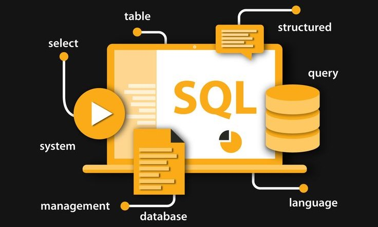

In this project, we take a deep dive into the employees data. This is a major data cleaning and analysis in MySQL. Using MySQL, we will learn how to convert dates, how to use subqueries and filters in your data to get correct outputs.

In this project, I delved into a comprehensive dataset from the HR department to derive meaningful insights about employee demographics, distribution, turnover rates, and tenure across various dimensions within the organization. Leveraging SQL queries, I conducted a thorough analysis to answer pertinent questions aimed at understanding the workforce dynamics and trends within the company.

In this section, immerse yourself in the dynamic realm of my Tableau projects. Here, data is not just numbers; it's a canvas waiting to be painted with insights. Through interactive visualizations and thoughtfully crafted dashboards, I bring data to life, making complexity simple and unlocking stories hidden within. Explore the impact of visualization excellence as I navigate diverse datasets, turning them into informative narratives that inspire action and understanding.

In this project, I will be evaluating an HR dataset about absenteeism and health. I will use my skills to provide a data driven approach to determine how to provide a bonus and incentive to healthy employees. I will also develop a database, SQL queries to answer questions and build a dashboard which meets a wireframe specification.
In this comprehensive sales data analysis project, I harnessed the power of SQL to unravel profound insights within a complex dataset. By dissecting product line performances, discerning yearly and monthly sales patterns, conducting RFM analyses to segment customers, and exploring product associations, I aimed to empower strategic decision-making.